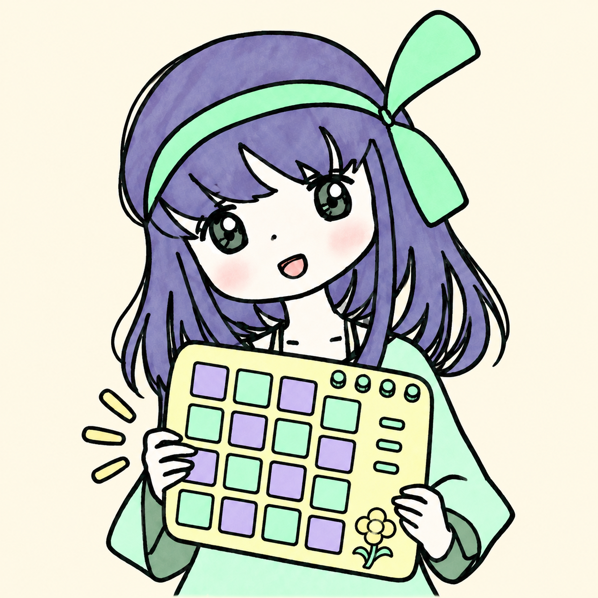
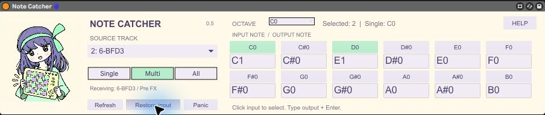

aoe1928 / MIDI COMPANION
Note Catcher
音を選ぶ。音ごとに、行き先を変える。
操作マニュアル / v0.5
01 最初の準備
ZIPを展開し、AMXD・3つのJS・キャラクター画像を同じフォルダーに保管します。受信専用MIDIトラックの先頭にNote Catcher、その後ろにAD2などの音源を挿します。Source trackで送り元を選ぶとMIDI From／Pre FXとMonitor Inが設定されます。
02 グリッドの使い方
上のボタンが入力音、下の欄が出力音です。OCTAVEで12音ずつ切り替え、全128音を独立して設定できます。別のオクターブに移っても選択と割り当ては残ります。
| モード | 動作 |
|---|
| Single | ボタンで選んだ1音だけ。割り当てがあれば変換します。 |
| Multi | 選択した複数音だけ通し、それぞれを指定した出力音へ変換します。 |
| All | 選択した音を変換し、未設定の音も元の音程のまま通します。 |
出力欄をダブルクリックして文字を選び、C1・C#1・Db1、またはMIDI番号0〜127を入力してEnter。入力すると割り当てがオンになり、上のボタンがミント色になります。誤入力は赤い枠で知らせ、以前の値を維持します。Singleではその入力音も選択します。
Multi／Allで選択中の入力ボタンを押すと、割り当てを解除します。再度オンにすると入力と同じ音程から始まります。音名はオクターブ必須。MIDI 60＝C3、24＝C0、36＝C1です。
03 C0→C1、D0→E1を設定する
- Multiを選び、OCTAVEをC0にします。
- C0の下の出力欄にC1を入力してEnter。
- D0の下の出力欄にE1を入力してEnter。
- C0とD0のボタンがミント色、Selectedが2であることを確認します。
- 送り元を再生します。C0はC1、D0はE1となり、それ以外は除外されます。
割り当て・モード・Singleの選択音・表示オクターブはLiveのパラメーターとしてセットに保存します。編集後はセットを保存してください。旧Rangeは廃止しました。旧範囲の複数選択への自動移行は行いません。
04 BFD3 → AD2
BFD3トラックのPre FXのMIDIを受け、AD2の実際のキーマップに合うように出力を指定します。キックなどの奏法名は自動判定しません。BFD3の音声や内部グルーブ出力を受ける機能でもありません。
後段にPitchがある場合、変換後の音がさらに移動します。例：C0→C1にした後、Pitchが+12ならAD2へはC2が届きます。意図した音程か確認してください。
05 困ったとき・制限
| 症状／操作 | 説明 |
|---|
| 音が出ない | MultiでSelectedが0ではないか、送り元、Monitor In、音源、ミュートを確認。まずAllで試します。 |
| 違うドラムが鳴る | AD2のMIDI番号と出力音、後段Pitchを確認します。音名のオクターブ表記差にも注意します。 |
| Panic | 保持中の出力音へノートオフを送ります。音源のリバーブなどの余韻は別です。 |
| Refresh | 送り元一覧と入力状態を更新します。 |
| Restore input | この読み込み中に最初に送り元を選ぶ前の入力へ戻します。復元用の控えは再読み込み後には残りません。 |
- 1受信トラックにつき送り元は1つ。自分のクリップとは合流しません。削除／バイパスで入力設定は元に戻りません。
- ノートのみ。CC・サステイン・ピッチベンド・MPEなどは転送しません。ベロシティとチャンネルを維持します。
- 設定変更は保持音を終了します。同じチャンネルの同じ出力音に重なった入力は、最初のノートオンと最後のノートオフへまとめます。保持中は再トリガーしません。
- MIDI処理はMaxのJavaScriptを使います。サンプル精度ではなく、高負荷時のタイミングは未検証です。
- Live 11.3.43 / Windows / Max 8.5.8で、Multiの個別変換・除外、Allの変換・未設定通過とノートオフを実機確認。Live 12／macOSとセット全体の再オープンは未検証です。